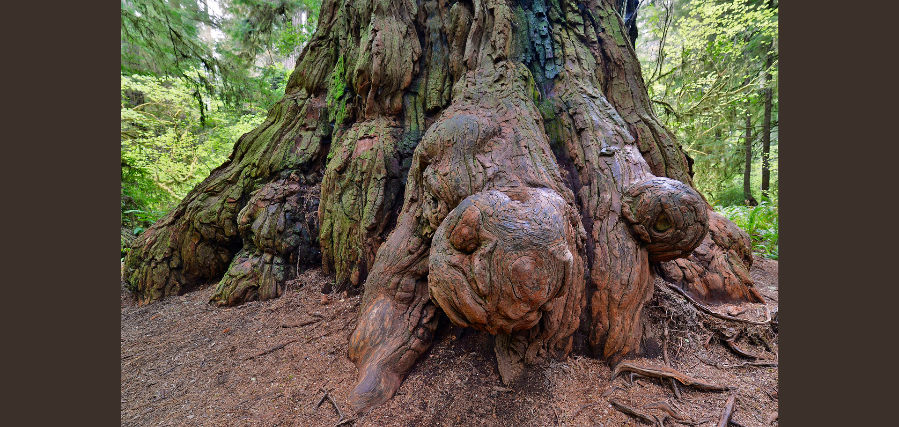

Education, Enforcement and Regulation
Redwood Forest Poaching. Redwood forest poaching is a serious threat to the health and survival of one of Earth’s most ancient and majestic ecosystems. Poachers illegally cut and steal redwood burl—thick, knotted growths found on the base or sides of redwood trees—to sell for high-end furniture, carvings, and décor. This destructive practice not only damages individual trees but also weakens the entire forest ecosystem. Burls protect the tree and serve as a source of new growth after fire or injury. When poachers remove them, they often use chainsaws and leave large, open wounds in the trees, making them more vulnerable to disease, insects, and decay. In many cases, the damage is irreversible, and the tree may die. Poaching often occurs in remote parts of protected parks like Redwood National and State Parks, where law enforcement presence is limited. Poachers typically operate at night to avoid detection, leaving behind litter, broken fences, and damaged trails. The consequences of poaching go beyond the trees. It disrupts habitats for wildlife, such as owls, squirrels, and amphibians that rely on stable forest conditions. Conservationists and park rangers work hard to combat poaching through surveillance, education, and community awareness. Protecting redwoods from poachers is vital to preserving their beauty and ecological importance for future generations.
